ESPHome firmware · M5Stack StackChan · Home Assistant
A desk buddy that lives in your Home Assistant.
Say “Okay Nabu” and it talks with you through Assist. Pet it, shake it or walk up to the desk and it reacts. Your lights, switches and air conditioner are one swipe away from its face. Everything runs on the robot and in your own Home Assistant: no add-on, no server, no cloud account.
- 22faces
- 8tiles + an AC
- 11games
- 0cloud accounts
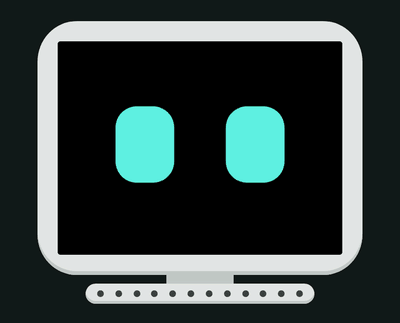
01 · Faces
22 faces, one personality.
Rounded aqua eyes on black, a thin mouth when it needs one, and little gloved hands that pop up for a wave, a thumbs-up or a cheer. The LED bar under the face joins in. Here are six. The rest are for you to find.
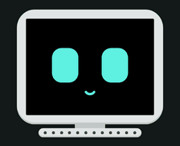
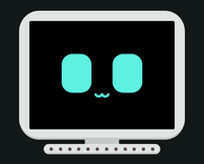
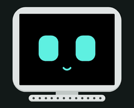
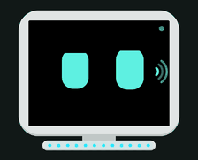
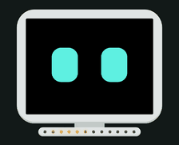
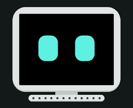
Pet it, shake it, pick it up, leave it alone, keep it up late, point a finger at it: it has a face for that, and a few secret ones too.
Find them on your robot.Pictures rendered from the Face Lab, where the faces were designed; the robot draws the same poses.
02 · Screens
Your controls, one swipe away.
Swipe left from the face: Screen 1, Screen 2, the air conditioner, Games, and back to the face. After 30 seconds it comes back to its face by itself.
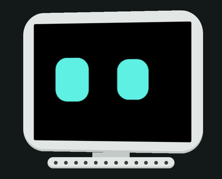
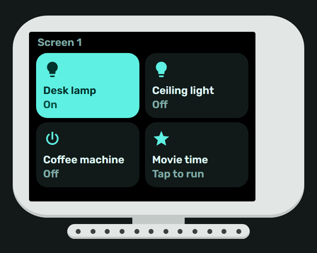
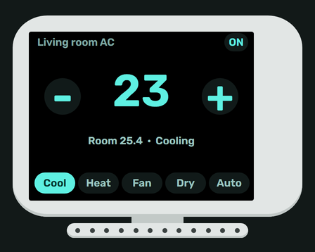
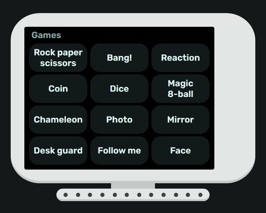
Screens rendered from the firmware's layout; the tile names are examples.
Tile 1 … Tile 8 and Air conditioner. Type an entity id like light.desk_lamp.03 · Games
It plays with you.
Everything happens on the robot: the screen, the head pads, the distance sensor, the microphone and the camera. Nothing goes to the cloud, and nothing needs a phone.
- Rock paper scissorsFirst to 2 wins. On “Shoot!”, tap rock, paper or scissors on the screen or a pad on its head.
- Bang!Point a finger right at it from close up: hands up! Then shout “BOOM!” (or tap its head). It falls, and comes back to life.
- ReactionWait for “Now!”, then tap as fast as you can. It remembers your best time.
- Coin & DiceTap to flip or roll.
- Magic 8-ballThink of a yes-or-no question, then tap.
- ChameleonHold something colourful in front of it: its eyes take that colour for a minute.
- Photo3, 2, 1, flash, and the photo is on its screen. Home Assistant can save it and send it to your phone.
- MirrorWhat its camera sees, live, for 20 seconds. Tap to take a photo.
- Desk guardArms itself after 10 seconds. Someone comes close: “Who are you?!” and a photo. Touch its head to turn it off.
- Follow meIts eyes follow movement in front of it. The green dot stays on while it runs.
Or say it: “Okay Nabu, let's play rock paper scissors”, “flip a coin”, “take a photo”… in English or Hebrew, once the voice automation is in Home Assistant.
04 · Modes
Lively, busy or asleep.
Hold its face for a moment to open the mode menu, or pick the Mode in Home Assistant, or just say it. Swipe down on the face for a thin bar with the time, the date and the battery.
05 · Private by design
When it listens, you can see it.
- A small green dot in the top-right corner whenever the microphone or the camera is on.
- Private mode switches both off, whatever asks for them: the microphone only hears silence and the camera isn't even started. A small icon shows it's on.
- Microphone mute turns listening off completely, wake word included.
- Your voice goes to your own Home Assistant, to the Assist pipeline you chose (it can run fully local).
- The camera games run on the robot, one frame at a time. Photos stay on its screen unless your Home Assistant saves them.
06 · Install
Five steps, then it's yours.
You need an M5Stack StackChan (the CoreS3 kit), Home Assistant with the ESPHome add-on (2026.8 or newer), and an Assist voice assistant.
- Add your Wi-Fi to ESPHomeESPHome → Secrets (top right):
wifi_ssidandwifi_password. - Create the robotESPHome → + New device → name it
stackchan. Click Edit, replace everything with the file on the right, and Save. - InstallThe first time, connect the robot with USB-C: Install → Plug into this computer (or flash the download at web.esphome.io). After that, Install works over Wi-Fi.
- Add it to Home AssistantIt shows up as discovered: Configure. Then ESPHome → the robot → Configure → turn on Allow the device to perform Home Assistant actions.
- Pick its voiceOn the robot's device page, choose the Assistant it should use. Say “Okay Nabu”.
wifi: ssid: !secret wifi_ssid password: !secret wifi_password substitutions: device_name: "stackchan" friendly_name: "Dravix" packages: dravix: url: https://github.com/YossiKon/dravix-os ref: main refresh: 0s # look at GitHub on every Install files: [deploy/esphome/stackchan-dravix.yaml]
Updating is pressing Install. The file pulls the newest firmware from GitHub on every build. Every change to main is compiled on ESPHome 2026.8.2 and on the latest release.
07 · Home Assistant
An ordinary ESPHome device. A not‑so‑ordinary friend.
No integration to install: the robot joins through ESPHome, with a voice satellite, controls, settings and sensors on its device page.
Controls
- Face
- Screen
- Mode
- Private mode
- Microphone mute
- Wake sound
- Follow me
- Desk guard
Sensors
- State
- Last heard
- Last reply
- Last voice problem
- Ambient light
- Battery
- Charging
- Firmware
- WiFi signal
Settings
- Tile 1 … 8
- Air conditioner
- Screen brightness
- LED brightness
- Reaction LEDs
- Sleep when the room is dark
- Screensaver after
- Bored after
- Night from
- Night until
- Bang loudness
Automations
Make it react to anything in your home. Use your robot's name in place of stackchan.
action: esphome.stackchan_show_face data: face: happy # or sad, love, done, greet, surprised, # angry, doubt, dizzy, error
action: esphome.stackchan_set_mode data: mode: busy # or normal, sleep
08 · Good to know
Honest notes.
Dravix 2.0 is brand new (November 2026): it compiles on ESPHome 2026.8.2 and the latest release, and its first tests on a real robot are under way. Here is what it can and can't tell.